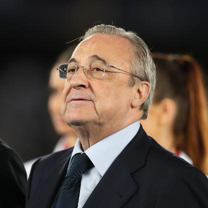
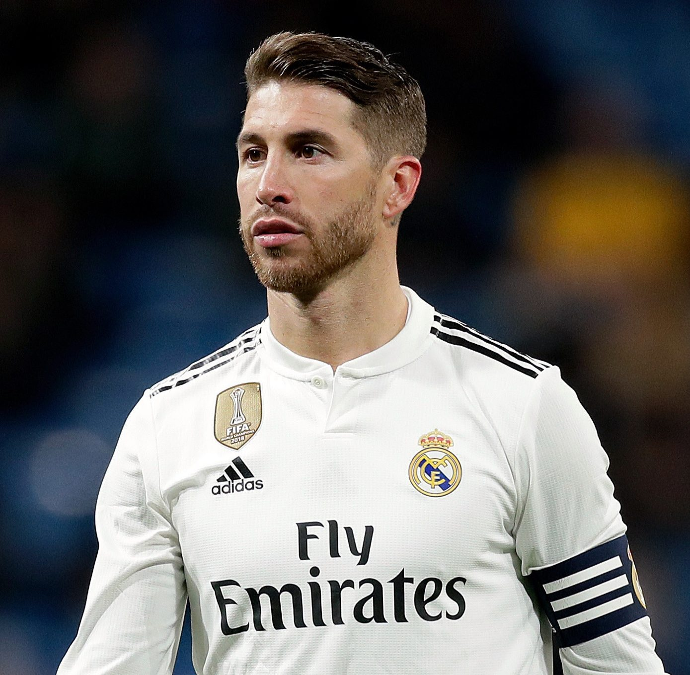

Real Madrid CF
Real Madrid CF
Real Madrid Club de Fútbol, meaning Royal Madrid Football Club), commonly referred to as Real Madrid, is a Spanish professional football club based in Madrid.Founded on 6 March 1902 as Madrid Football Club, the club has traditionally worn a white home kit since inception. The word real is Spanish for "royal" and was bestowed to the club by King Alfonso XIII in 1920 together with the royal crown in the emblem. The team has played its home matches in the 81,044-capacity Santiago Bernabéu Stadium in downtown Madrid since 1947. Unlike most European sporting entities, Real Madrid's members (socios) have owned and operated the club throughout its history. |
PRESIDENT : |
 Florentino Pérez |
MANAGER : |
 Zinedine Zidane |
CAPTAIN : |
 Sergio Ramos |
Real Madrid is famous for its attacking. Following is the table consisting of the most goals scored in respective league or cup.
| League | Player | Goals scored |
|---|---|---|
| Laliga | Cristiano Ronaldo | |
| UEFA Champions League | Cristiano Ronaldo | |
| Copa del Rey | Cristiano Ronaldo | |
| Copa de la Liga | Santillana | |
| Supercopa de España | Raúl | |
| FIFA Club World Cup | Gareth Bale | |
| European Cup | Alfredo Di Stéfano | |
| UEFA Super Cup | Sergio Ramos | |
| Intercontinental Cup | Ferenc Puskás |
Website Designed by Anuj Kinge